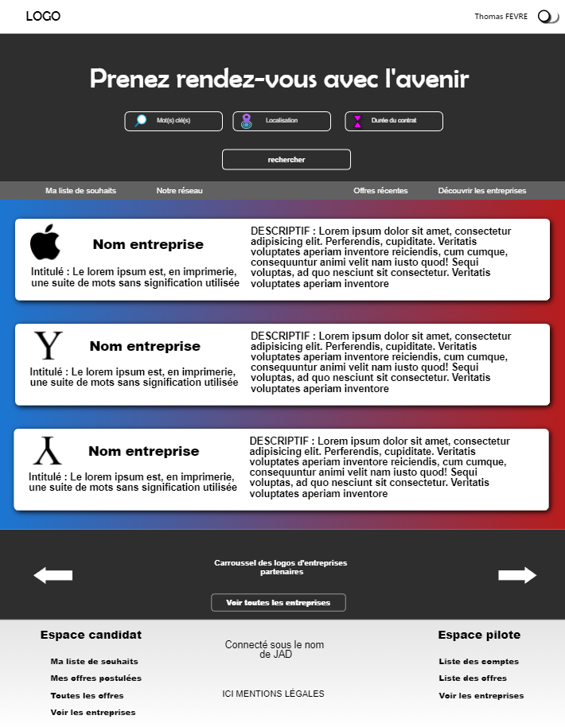
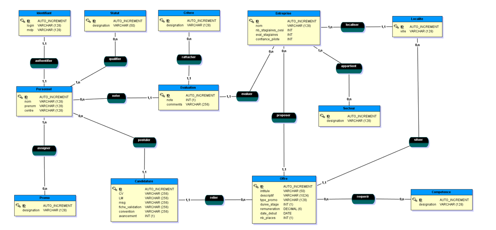

Aujourd’hui, les étudiants effectuent leurs recherches de stage en entreprise en activant leurs réseaux
personnels et professionnels (linkedIn, anciennes promotions, etc.), en postulant à des offres ou en
envoyant des candidatures spontanées.
Afin de rendre cette étape de recherche de stage plus facile et pratique, il serait nécessaire de disposer
d’un site web qui regroupe différentes offres de stage, et qui permettra de stocker les données des
entreprises ayant déjà pris un stagiaire, ou qui en recherchent un.
Le but de ce projet est de fournir une interface WEB qui va permettre d’informatiser l’aide à la recherche de stage en regroupant toutes les offres de stages. Il
permettra entre autre d’enregistrer les données des entreprises ayant déjà pris un stagiaire, ou qui en recherchent un.
Le projet dans son ensemble m'a permis d'apprendre :
- Les bases des langages du WEB (HTML, CSS, JavaScript, PHP).
- Utilisation d'un framework PHP (Laravel) pour développer un WEB app.
- Révision des connaissances en Base de données (SQL, MCD/MLD, etc.).
- Administration de serveur WEB avec apache (restriction des accès, virtual hosts).
- Le développement WEB responsive et PWA (service worker, manifest, htaccess, etc.).
Etude et Maquettage
Premièrement il nous faut préparer une architecture de base de données ainsi qu'une maquette du site qui nous permettront de remplir toutes les fonctionnalités demandées. Pour la maquette (wireframe), nous avons utilisé Cacoo, et nous sommes arrêtés sur les fonctionnalités (nous ne sommes pas des WEB designer). Pour la base de données, nous avons réaliser un MCD qui nous permets de stocker toutes les données dont nous avons besoin.
Maquette (page d'accueil)
Modèle conceptuel de données
Développement
La phase d'étude étant assez rapide car nous avons un cahier des charges très précis, nous passons très vite au développement. Nous n'avions qu'une petite semaine pour mettre tout ceci sur pieds. C'est là que Laravel entre en jeux, car il va nous permettre de gagner beaucoups de temps ne serait-ce que pour les interactions avec la base de données et bien d'autres choses (Moteur de template Blade par exemple). Nous avons dû aussi passer par un peu d'administration WEB avec notemment la création de deux virtual hosts, l'accès au domaine par un mot de passe, etc.
Il est compliqué de vous explicité ici, à l'écrit, tout le travail réalisé mais si cela vous intéresse vous trouverez ci-dessous un lien vers le PDF du projet qui contient les spécifications fonctionnelles et un lien vers le projet su GitHub.
Lien vers GitHub